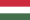
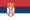
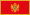
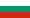
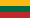

A csoportban öt válogatott, Magyarország, Szerbia, Montenegró, Bulgária és Litvánia szerepel. A csapatok oda-visszavágós körmérkőzéses rendszerben mérkőznek egymással. Az első két helyezett kijut az Európa-bajnokságra.
A magyar labdarúgó-válogatott Magyarország nemzeti csapata, amelyet a Magyar Labdarúgó-szövetség irányít. A 20. században sikert sikerre halmozó csapat 1986 után, 30 évet követően kvalifikálta magát újra nemzetközi sporteseményre 2016-ban. Az Eb-n első helyen jutott tovább a csoportjából, de a nyolcaddöntőben Belgiumtól 4–0-s vereséget szenvedett.
A szerb labdarúgó-válogatott Szerbia nemzeti csapata, amelyet a szerb labdarúgó-szövetség irányít. A FIFA Szerbia válogatottját Szerbia és Montenegró, valamint a Jugoszláv Szocialista Szövetségi Köztársaság nemzeti válogatottjai közvetlen utódjaként tekinti. Önálló államként részt vettek a 2010-es labdarúgó-világbajnokságon.
A montenegrói labdarúgó-válogatott Montenegró nemzeti csapata, amelyet a montenegrói labdarúgó-szövetség irányít. Montenegró 2006. június 3-án vált külön Szerbiától, de a 2006-os labdarúgó-világbajnokságon még közös csapattal Szerbia és Montenegró néven indultak. Első hivatalos mérkőzésüket 2007. március 24-én játszották Magyarország ellen, Podgoricában.
A bolgár labdarúgó-válogatott Bulgária nemzeti csapata, amelyet a bolgár labdarúgó-szövetség irányít. Világbajnokságon hét alkalommal vettek részt, legjobb eredményük egy negyedik hely az 1994-es világbajnokságról. Európa-bajnokságon kétszer szerepeltek, legutóbb 2004-ben.
A litván labdarúgó-válogatott Litvánia nemzeti csapata, amelyet a litván labdarúgó-szövetség ,irányít. Litvánia első hivatalos mérkőzését 1923-ban játszotta, 1940-ben a Szovjetunió része lett. 1990-ben függetlenné vált és május 27-én lejátszotta első mérkőzését Grúzia ellen. Még egyetlen világ- és Európa-bajnokságra sem sikerült kijutnia.
